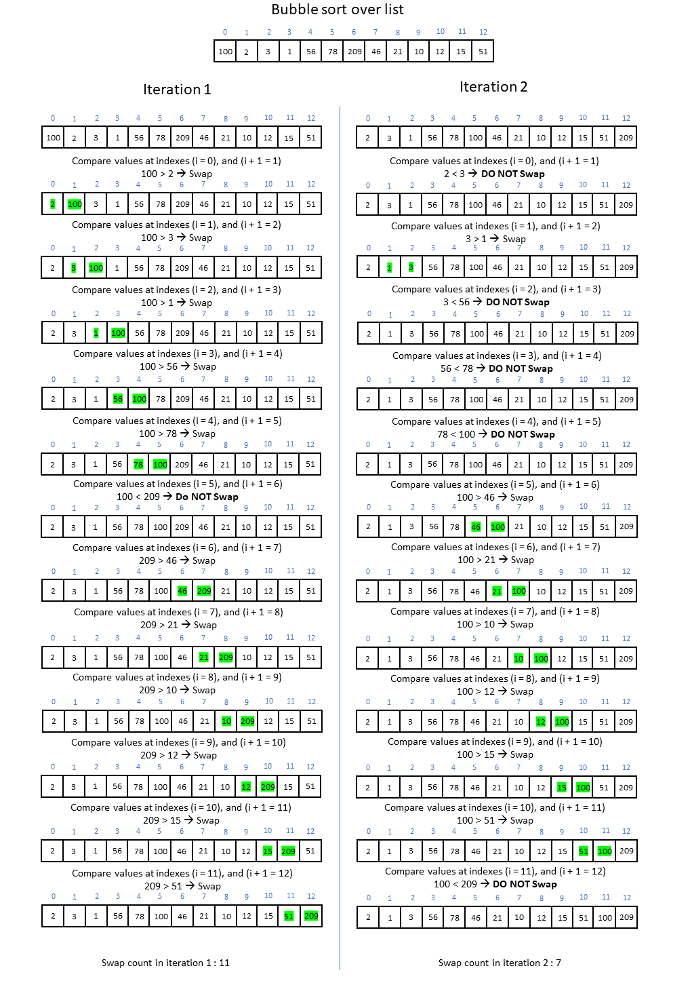
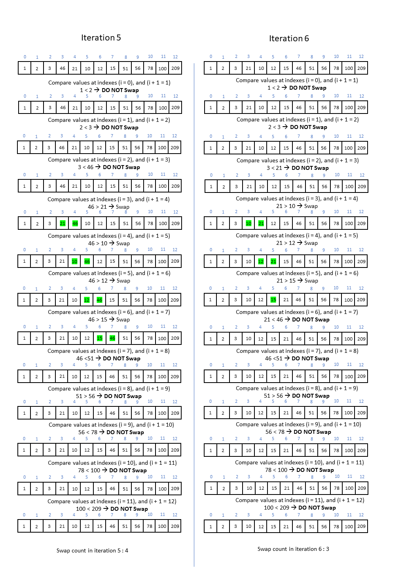
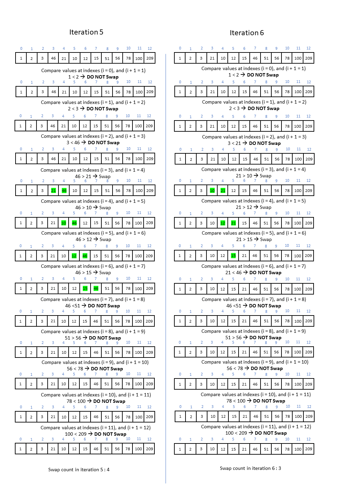

Namespace CSFundamentalsTests.Algorithms.Sort
Classes
BubbleSortTests
Tests methods in BubbleSort class.
To visualize how the array evolves while executing bubble sort on ArrayWithDistinctValues see: ,  , .
, .
Constants
Is a collection of some constant values used in testing sort algorithms.
ElementTests
Tests methods in Element class.
HeapSortTests
Tests methods in HeapSort class.
InsertionSortTests
Tests methods in InsertionSort class.
MergeSortTests
Tests method in MergeSort class.
QuickSortTests
Tests methods in QuickSort class.
RadixSortTests
Tests methods in RadixSort class.
SelectionSortTests
Tests methods in SelectionSort class.
SortTests
Implements methods for testing sort algorithms over arrays with different properties.
UtilsTests
Tests methods in Utils class.